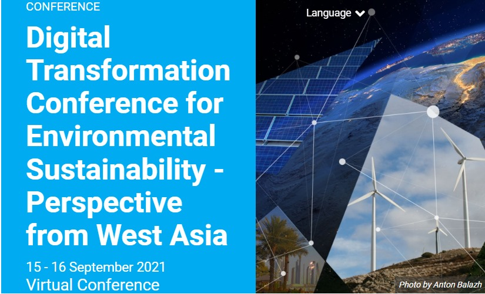

Digital Transformation Conference for Environmental Sustainability
In this conference, a wide range of stakeholders discussed clean technologies, digital tools and applications that can be adopted in the West ....

Securing our Digital Future
At the event, a report on the economic, social, and geopolitical implications of escalating cybersecurity threats and the urgent need for international collaboration to combat them was unveiled....
Education Worldwide India Fair - Bangalore 2024
Education Worldwide India in Bangalore is a highly anticipated international platform for education exhibitions. It offers students the chance to study ....